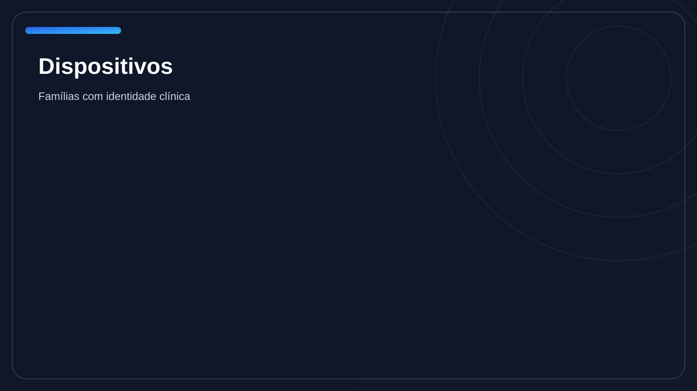
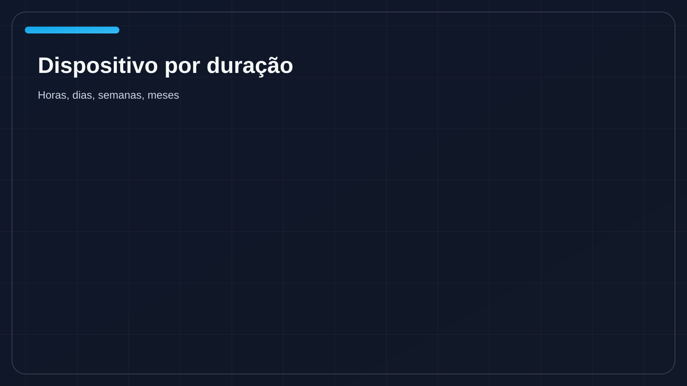
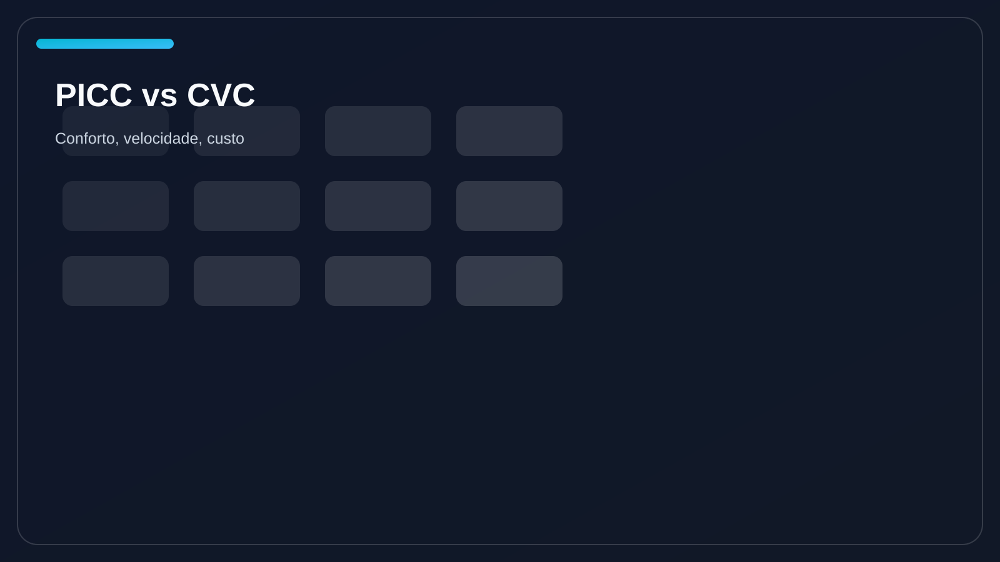
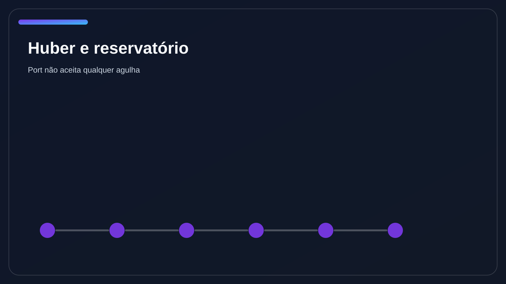

Part 3 MasterclassAbrir plano
Dispositivos — versão overkill
Terceira de cinco partes do aprofundamento: atlas vivo das famílias, comparadores, pegadinhas de nomenclatura, manutenção, Huber, bundles e lógica de escolha até cansar.
Terceira de cinco partes do aprofundamento: atlas vivo das famílias, comparadores, pegadinhas de nomenclatura, manutenção, Huber, bundles e lógica de escolha até cansar.





